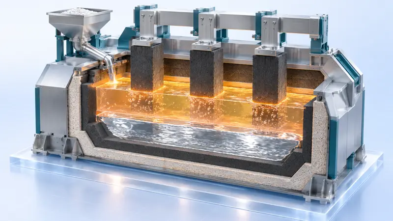

合成氨工业
怎样把空气里的氮又快、又多、又省地变成氨？

化学反应速率的影响因素
同样两个反应，为什么有的几秒就完、有的等半天？快慢到底由什么决定？

搭建球棍模型认识有机化合物分子结构
分子画在纸上是平的，真实的三维形状到底是什么样？搭一座球棍模型能看出什么？

强酸与强碱的中和滴定
前面加了 20 多毫升几乎看不出变化，为什么最后半滴颜色就全变了？

氯气的制备及性质
要一瓶干燥、纯净的氯气，装置里每一段各管什么？少一段会怎样？

高炉炼铁
一堆矿石从炉顶倒下去，怎么几小时后就变成一股铁水，还越省越好？

金属冶炼：电解熔融盐 + 铝热
为什么铝只能靠电「拆」出来，而铁能被铝「换」出来？

煤的综合利用：以煤的气化为主线
煤只能烧吗？怎么把煤变成能造化肥、造甲醇的气？

接触法制硫酸
怎样把矿石里的硫，又快、又多、又省、又干净地变成硫酸？

盐类的水解及其应用
盐电离出来的离子看上去「既不酸也不碱」，凭什么能让溶液显出酸碱性？

工业制水泥
一车石头和土，凭什么磨一磨、烧一烧、再磨一磨，就变成能撑起大坝的水泥？

铁及其化合物：铁的价态转化
同一个铁元素，为什么在试管里一会儿是 +2 价、一会儿是 +3 价，我们凭什么知道它是哪一个？

电解原理：电解氯化铜溶液与饱和食盐水
同一个直流电源，为什么电解氯化铜溶液得到铜和氯气，电解饱和食盐水却得到氢气、氯气和氢氧化钠？

氨的制备与性质（含喷泉实验）
一瓶氨气，凭什么能把烧杯里的水自己「吸」到瓶子里去？

探究影响化学平衡移动的因素
改变一个条件，凭什么说平衡「往哪边移」？

焰色试验与原子光谱
金属在火焰里为什么各有各的颜色，这点颜色凭什么能当成「化验报告」？

原电池：单液到双液
同一杯稀硫酸里已经有电流了，为什么还要换成两杯、再加一根盐桥？

电解质的电离与溶液导电性、离子反应的实质
干手、湿手都是同一只手，为什么湿了反而容易触电？

浓、稀硝酸的性质与氮氧化物的转化
同样是铜和硝酸，为什么一瓶冒红棕色气体、另一瓶什么颜色都没有？

海水提溴：空气吹出法
海水里的溴只有 65 mg/L，怎么把它变成一瓶液溴？

金属钠的性质（含钠着火扑救）
一块银白色的小金属，为什么必须泡在煤油里，着火时连水都不能浇？

硫、二氧化硫、浓硫酸的性质与不同价态含硫物质的转化
同样是硫，为什么有时它是黄色固体、有时让品红褪成无色、有时又跑进铁粉里？

吸氧腐蚀与暖贴的设计
铁生锈这么慢的事，凭什么能做出一个 45 ℃ 以上的暖贴？又凭什么反过来用它保护铁不生锈？

氯碱工业
同样的电，怎样换来更多烧碱、更少电耗，又不出事故？

侯氏制碱
怎样用食盐和氨造出纯碱，还顺手拿到氮肥？